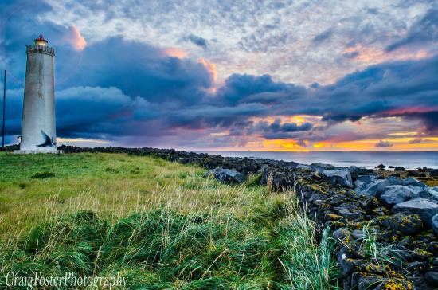
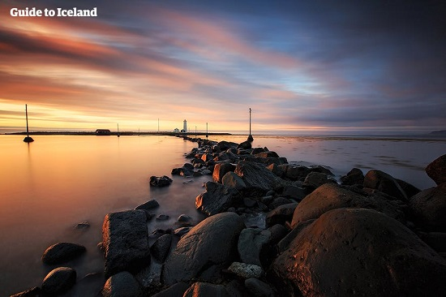
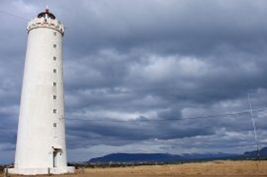
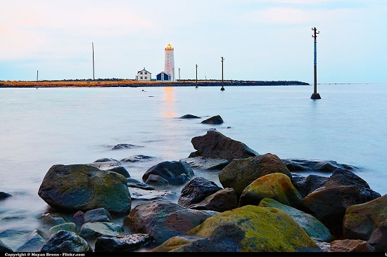

✈ Grótta w Reykjavíku
Grótta – wyspa u zachodniego wybrzeża Islandii, w zatoce Faxaflói.
Leży na terenie miasta Seltjarnarnes, na zachód od jego centrum.
Wyspa połączona jest groblą ze stałym lądem, po której, z zachowaniem ostrożności można na nią dotrzeć pieszo, lecz tylko w czasie odpływu.
| Liczba mieszkańców: |
Metry nad poziomem morza: |
| 0 |
1 m n.p.m |
CIEKAWOSTKI
- W XVI wieku istniało tu gospodarstwo
- Grótta wywodzi się ze staroislandzkiego słowa oznaczającego młyn, w którym mieli się pszenicę
- W 1897 roku na wyspie powstała pierwsza latarnia morska Gróttuviti, a ta, która istnieje obecnie pochodzi z 1947r
- Wyspę można zwiedzać o każdej porze roku, również zimą
- Ma małe zanieczyszczenie światłem, co czyni ją jednym z najbardziej popularnych miejsc w okolicach Reykjavíku, w którym można podziwiać zorzę polarną



